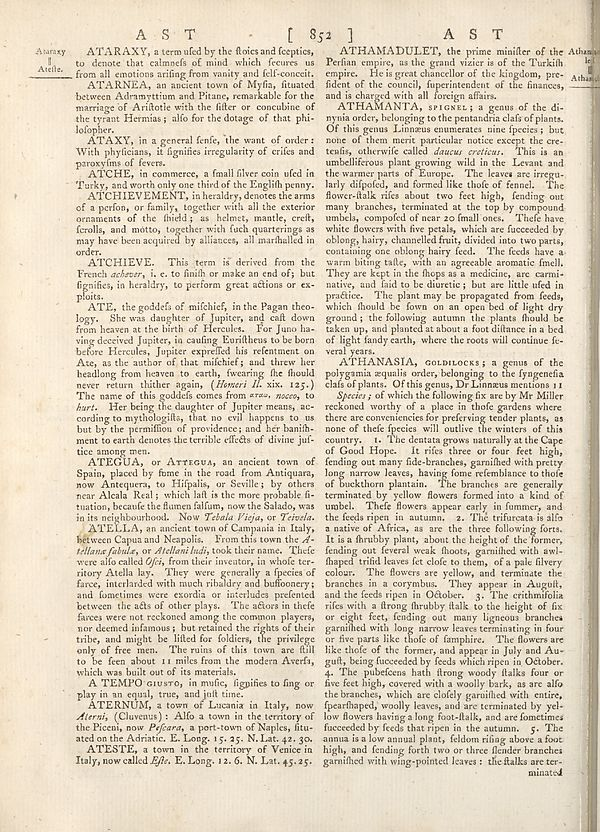

Scan ID britannica:309f765b1ecc83e0a7f7762e44b4a927a7555443:train:2171
Image SHA-256 f8869fa95f190d0e556bf8d2397c0c36da436ea1b23405995f0aac0f398f26d5
Status: ok. Running header: A S T [ 852] A S T (catchword). Removed page furniture: Page-header: A S T [ 852] A S T.
PDF · raw Parse reply · LaTeX
Entries: ATARAXY ATAXY ATCHE ATCHIEVEMENT ATCHIEVE ATE ATEGUA ATELLA ATERNUM ATHAMADULET ATHAMANTA, SPIGNEL ATHANASIA, GOLDLOCKS

| # | Class | Box | Parse 3.5 | Used text | Source |
|---|---|---|---|---|---|
| 1 | Text | [0.0557, 0.0563, 0.5244, 0.0969] | Ataraxy, a term ed by the floes and fequips, to denote that calmness of mind which feureus us from all emotions arising from vanity and fell-conceit. | ATARAXY, a term used by the stoics and sceptics, to denote that calmness of mind which secures us from all emotions arising from vanity and self-conceit. | super_vl |
| 2 | Text | [0.123, 0.0977, 0.5254, 0.1617] | ATARNEA, an ancient town of Myfn, flatuated between Akrimytition and Plans, remarkable for the marriage of Arribite with the filter or consecutive of the tyrant Hermias; also for the dotage of that phi-lolopier. | ATARNEĀ, an ancient town of Myſia, ſituated between Adramyttium and Pitane, remarkable for the marriage of Ariſtotle with the ſiſter or concubine of the tyrant Hermias; alſo for the dotage of that philoſopher. | super_vl |
| 3 | Text | [0.125, 0.1609, 0.5264, 0.2031] | ATAXY, in a general fenfe, the want of order: With phyticians, it signifies irregularity of crises and paroxysites of fevers. | ATAXY, in a general sense, the want of order: With physicians, it signifies irregularity of crises and paroxysms of fevers. | super_vl |
| 4 | Text | [0.124, 0.2047, 0.5273, 0.2297] | AGCHE, in commerce, a small liver coin ufed in Turkey, and worth only one third of the English penny. | ATCHE, in commerce, a small silver coin used in Turkey, and worth only one third of the English penny. | super_vl |
| 5 | Text | [0.1221, 0.2289, 0.5283, 0.3086] | ATCHIEVEMENT, in heralyly denotes the arms of a person, or family, together with all the exterior ornament of the fluid; as helmes, mantle, credit, fcrolls, and motto, together with fuch quarterings as may have been acquired by aliiances, all marhalled in order. | ATCHIEVEMENT, in heraldry, denotes the arms of a person, or family, together with all the exterior ornaments of the field; as helmet, mantle, crest, scrolls, and motto, together with such quarterings as may have been acquired by alliances, all marshalled in order. | super_vl |
| 6 | Text | [0.1211, 0.3094, 0.5293, 0.3625] | ATHCIEVE. This item is derived from the French _abarne_, i.c. to fish or make an end of his figurities, in heredity, to prefer green schemes or ex-ploids. | ATCHIEVE. This term is derived from the French achever, i. e. to finish or make an end of; but signifies, in heraldry, to perform great actions or exploits. | super_vl |
| 7 | Text | [0.1201, 0.3633, 0.5234, 0.5492] | ATE, the goddels of mithief; in the Pagan tho-ology. She was daughter of Jupiter, and caft down from heaven at the birth of Hercules. For Juno ha-ving decided Jupiter, in scaling Enulflets to be born before Hercules, Jupiter expelled his retirement on Ates, as the author of that miichief; and threw her headlong from heaven to earth, featuring the floodal never return children again (Honeri L six. 125.) The name of the goddels comes from stars, men, to _hart_. Her being the daughter of Jupiter means, according to mythologiils, has no evil happens to us but by the permitief providence, and her h | ATE, the goddess of mischief, in the Pagan theology. She was daughter of Jupiter, and cast down from heaven at the birth of Hercules. For Juno having deceived Jupiter, in causing Eurysthenes to be born before Hercules, Jupiter expelled his resentment on Ate, as the author of that mischief; and threw her headlong from heaven to earth, swearing she should never return thither again, (Homeri Il. six. 125.) The name of this goddess comes from ατα, noceo, to hurt. Her being the daughter of Jupiter means, according to mythologists, that no evil happens to us but by the permission of providence; and | super_vl |
| 8 | Text | [0.1191, 0.5484, 0.5273, 0.6281] | ATEGUA, or ATEGUA, an ancient town of Spain, placed by fame in the road from Antiquars, now Antquers, a Filipin, or Seville, or others near Aleala Reil; which left in the more probable fi-tuation, because the flumen fallum, now the Salado, was in its neighborhood. Now _Teleda Prins, or Yrtede._ | ATEGUA, or ATEGUA, an ancient town of Spain, placed by fame in the road from Antiquara, now Antequera, to Hifpalis, or Seville; by others near Alcala Real; which last is the more probable situation, because the flumen falum, now the Salado, was in its neighbourhood. Now Tebala Vieja, or Teivela. | super_vl |
| 9 | Text | [0.1182, 0.6289, 0.5303, 0.8148] | ATELLA, an ancient town of Gargania in Italy, between Capua and Nespolis. From this town the _Atllana fabula, or Atellani India,_ took their name. There were alto called _Ofis,_ from their invasion, in whole territory Ashala by. They were generally a species of force, interlarded with much ribalry and buffoonery and foundoreste were ecordix or intestinalis performed between the each of other plays. The authors thank these forces were not reckoned among the common players, nor deemed infamous , but retained the rights of their tribe, and might be listed for folders, the privilege only of free m | ATELLA, an ancient town of Campania in Italy, between Capua and Neapolis. From this town the Atellanae fabulae, or Atellani ludi, took their name. These were also called Oseci, from their inventor, in whose territory Atella lay. They were generally a species of farce, interlarded with much ribaldry and buffoonery; and sometimes were exodia or interludes presented between the acts of other plays. The actors in these farces were not reckoned among the common players, nor deemed infamous; but retained the rights of their tribe, and might be listed for soldiers, the privilege only of free men. The | super_vl |
| 10 | Text | [0.1172, 0.8156, 0.5312, 0.8422] | A TEMO GUISTO, in multic, figurities to flag or play in an equal, true, and just time. | A TEMPO giusto, in music, signifies to sing or play in an equal, true, and just time. | super_vl |
| 11 | Text | [0.1162, 0.843, 0.5293, 0.893] | ATERNUM, s town of Lucerna in Italy, now _Alteris_, (Chorusas) I. Alfo a town in the territory of the Piceni, now _Pelcara_, a port-town of Naples, fitu-ated and the infinite. E. Long 15.25. V.Lav. 42.50. | ATERNUM, a town of Lucania in Italy, now Aterni, (Cluvenus): Also a town in the territory of the Piceni, now Pescara, a port-town of Naples, situated on the Adriatic. E. Long. 15. 25. N. Lat. 42. 30. | super_vl |
| 12 | Text | [0.1172, 0.8938, 0.5225, 0.9219] | ATESTE, a town in the territory of Veneto in Italy, now called _Rje_. E. Long 12.6. N. Lat. 45.25. | ated on the Adriatic. E. Long. 15. 25. N. Lat. 42. 30. ATESTE, a town in the territory of Venice in Italy, now called Este. E. Long. 12. 6. N. Lat. 45. 25. | super_vl · expanded_beyond_parse |
| 13 | Text | [0.5332, 0.0547, 0.9932, 0.1219] | ATHAMADULET, the prime minister of the Perfin empire, as the grand victor is of the Turkish empire. He is great chancellor of the kingdom, pre-fident of the conced, imperirendment of the finances, and is charged with all foreign affairs. | ATHAMADULET, the prime minister of the Persian empire, as the grand vizier is of the Turkish empire. He is great chancellor of the kingdom, president of the council, superintendent of the finances, and is charged with all foreign affairs. | super_vl |
| 14 | Text | [0.5322, 0.1227, 0.9922, 0.4273] | THAMANTA, STORKS! a genus of the di-nynia order, belonging to the pantandria claf of plants. Of this genus Limone enumerated nine species; but none of them most particular notice except there-teals, otherwise called _dance creticus_. This is an unbeliferous plant growing wild in the Levant and the warranza part of Europe. The leaves rise irreger-larly dipoled, and formed like thole of fence). The flower-flak ribs dated two feet high, finding out many branches, terminated at the top by compound number, compelled of new zo small ones. There have white flowers with the petals, which are focected | ATHAMANTA, SPIGNEL; a genus of the di-nynia order, belonging to the pentandria class of plants. Of this genus Linnaeus enumerates nine species; but none of them merit particular notice except the cretensis, otherwise called daucus creticus. This is an umbelliferous plant growing wild in the Levant and the warmer parts of Europe. The leaves are irregularly difpoled, and formed like those of fennel. The flower-stalk rises about two feet high, sending out many branches, terminated at the top by compound umbels, composed of near 20 small ones. These have white flowers with five petals, which are s | super_vl |
| 15 | Text | [0.5342, 0.4281, 0.9912, 0.4633] | ATHANASIA, GOLDLOCKS; a genus of the polyganta aqualia order, belonging to the fyngeneria class of plants. Of this genus, Dr.Limous mentions 11 | ATHANASIA, GOLDLOCKS; a genus of the polygamia æqualis order, belonging to the syngenesia class of plants. Of this genus, Dr. Linnaeus mentions 11 | super_vl |
| 16 | Text | [0.5352, 0.4648, 0.9941, 0.9336] | _Species_ of which the followingic are by Mr Millerreckoned worthy of a place in those gardens where there are convenience for preferring tender plants, as some of the species will outlive the waters of this country. 1. The dentants grows naturally at the Cape of God Hope. It rises three or four feet high, feeding out many fine branches garnished with pretty long narrow leaves, having form resemblance to thole of buckthown plannian. The branches are generally terminated by yellow flowers formed into a kind of tunnel. Thefe flowers appear early in tomary, and the feeds ripen in autumn. 3. The t | Species; of which the following fix are by Mr Miller reckoned worthy of a place in those gardens where there are conveniences for preferring tender plants, as none of the species will outlive the winters of this country. 1. The dentata grows naturally at the Cape of Good Hope. It rises three or four feet high, sending out many side-branches, garnished with pretty long narrow leaves, having some resemblance to those of buckthorn plantain. The branches are generally terminated by yellow flowers formed into a kind of umbel. These flowers appear early in summer, and the seeds ripen in autumn. 2. T | super_vl |
Britannica scans: National Library of Scotland, CC0 1.0. Wikipedia text: Wikipedia contributors, CC BY-SA 4.0, revision links on each page. Generated 2026-10-18T13:26:14+00:00.